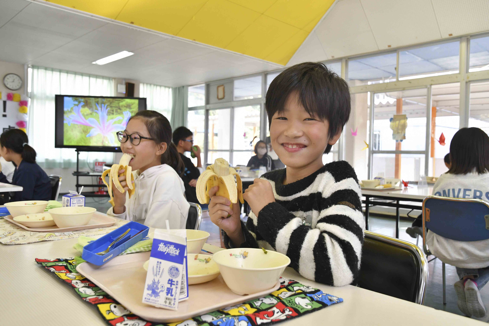
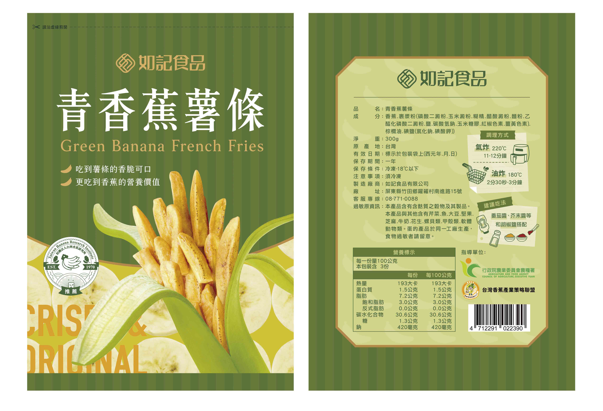

日本學童享用臺灣香蕉（圖／農糧署）

新開發香蕉加工產品(香蕉產業聯盟研發)（圖／農糧署）
111年於10月17日辦理臺灣香蕉輸日行銷記者會與日本茨城縣笠間市及附近市町合作，並於11月10日、11日、15日及16日在茨城縣供應臺蕉做為學童營養午餐水果，深受日本學童喜愛，加深對臺蕉之印象。本年度供應25,000根香蕉至共日本茨城縣9個市町之中小學校園。
舉辦國內10場次的香蕉及其加值產品宣傳促銷推廣活動，並贊助台灣職業棒球聯賽，鼓勵運動員及民眾吃香蕉，推廣層面多元化，提高銷售量。另辦理食農教育約20場次，介紹消費者認識香蕉及香蕉創意料理，計600人次參與，深獲國內消費者肯定。舉辦香蕉評鑑1場次，參觀人次達15,000人，提升香蕉品質，樹立優質臺蕉典範。
多元發展加工產品，111年計研發3項產品為香蕉蘿蔔糕、青香蕉薯條、香蕉沙其瑪，並逐一商品化少量販售中，112年逐步擴展香蕉加工量能，以穩定產銷，保障農民收益。
1.推動香蕉收入保險、香蕉食農教育及栽培技術改進等教育講習20場。
2.香蕉評鑑活動1次。
3.國內行銷記者會10場。